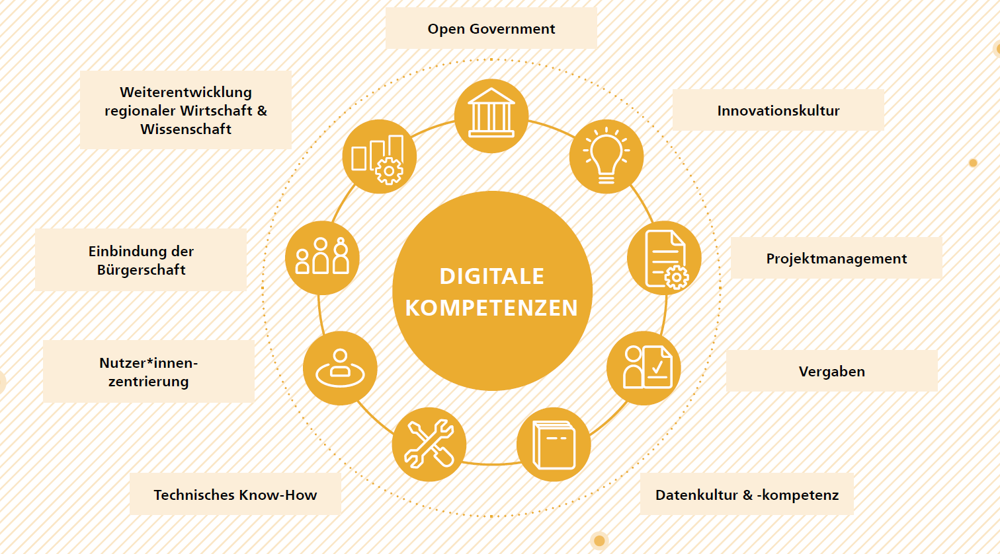
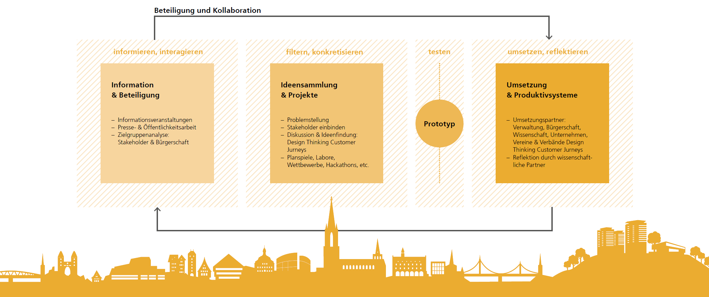
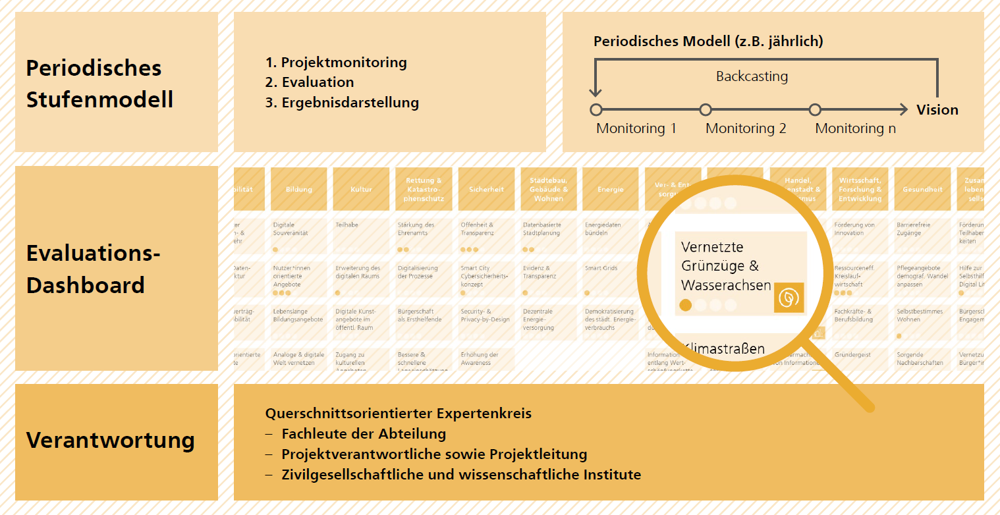
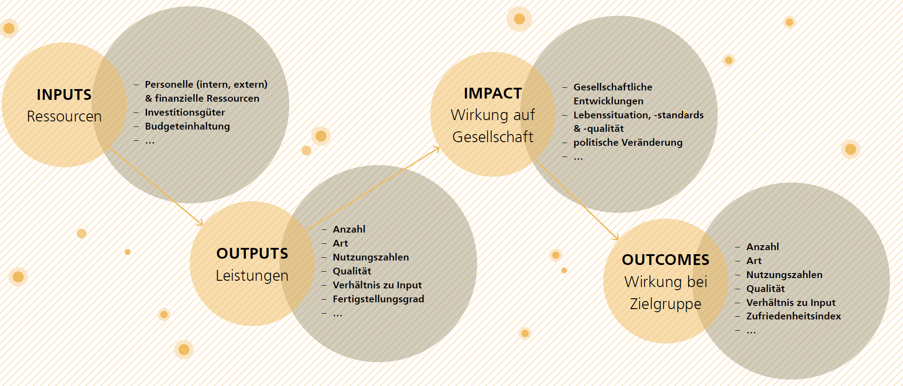
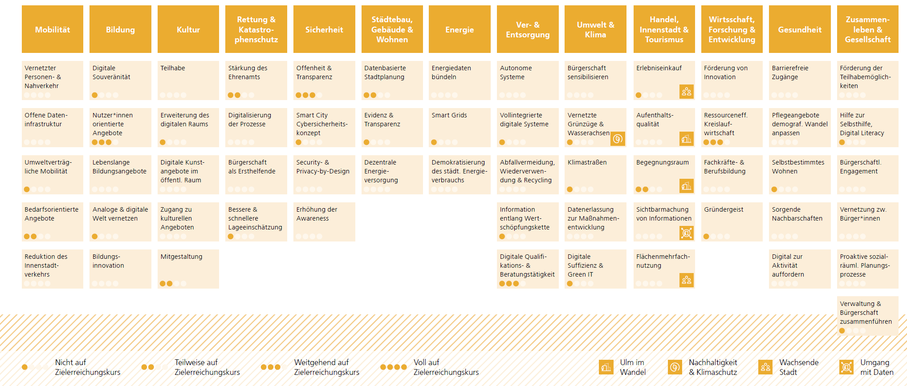
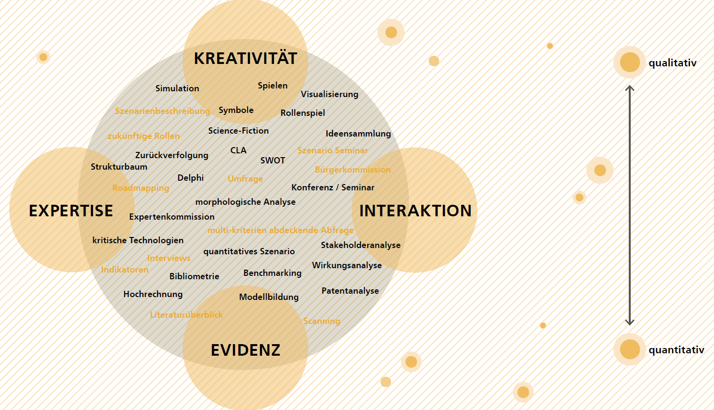
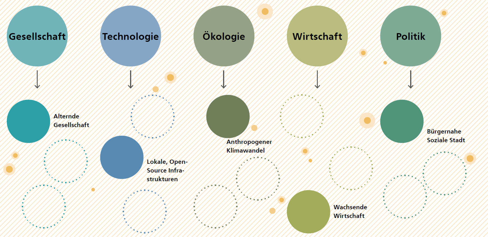
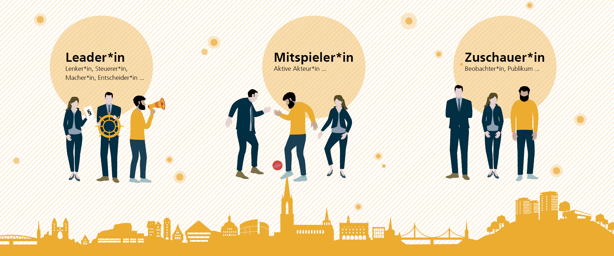

Organisatorisches Grundlagenkapitel¶
Neben technischen Grundlagen ist auch die Schaffung von organisatorischen und kulturellen Grundlagen von entscheidender Bedeutung für die Verankerung der Smart City Ulm. Zunehmend komplexe Herausforderung erfordern ein neues Verständnis von Organisation. Die Stadt Ulm hat sich zur Aufgabe gemacht, diesen Wandel proaktiv und verantwortungsvoll zu gestalten. Dabei muss die Gestaltung der digitalen Transformation an der Bewältigung sozialökologischer Herausforderungen ausgerichtet werden und der Nachhaltigkeit dienen.
Um die Ziele aus Vision und Handlungsfeldern umzusetzen und die erforderlichen technischen Grundlagen zu schaffen, bedarf es veränderter Strukturen, die Verlässlichkeit und Professionalität gewährleisten und gleichzeitig dynamische und agile Prozesse zulassen.
Dafür müssen Kompetenzen auf- und ausgebaut, die organisatorische Verankerung neu gestaltet sowie nachhaltige, zielgruppenspezifische und breitenwirksame Kommunikations- und Beteiligungsstrukturen implementiert werden. Dazu gehört auch die Aufgabe der strategischen Steuerung sowie der Aufbau von Monitoring und Evaluation von Strategien und Maßnahmen, um Themen beständig weiterzuentwickeln. Um zukünftig bei immer schnelleren Technologiezyklen weitreichende Entscheidungen fundiert treffen zu können, sind Methoden der städtischen Zukunftserschließung (Urban Foresight) ein geeignetes Mittel. Letztendlich ist auch ein Transfer notwendig, da die Smart City nicht an der Stadtgrenze Halt macht. Dieser ist sowohl regional als auch (inter-)national ein wichtiger Bestandteil, beispielsweise im Austausch mit anderen Städten, auch um konkrete Wünsche und Bedürfnisse aufzunehmen, einen gegenseitigen Wissenstransfer sicherzustellen und Anknüpfungspunkte sowie Schnittstellen zu identifizieren.
Kompetenzen¶
Die Ulmer Stadtverwaltung hat vielfältige kommunale Aufgaben. Entsprechend divers sind die Hintergründe und Kompetenzen der Stadtmitarbeitenden, die in ihren jeweiligen Bereichen eine hohe Expertise einbringen. Digitalisierung ist ein Querschnittsthema, das bereichsübergreifend relevant ist, vom Sozialbereich über Kultur und Bildung bis in den Bau- und Stadtplanungsbereich. Dadurch wird es notwendig, in allen städtischen Bereichen digitale Kompetenzen aufzubauen und den Verwaltungsmitarbeitenden den Raum und die Ressourcen zu geben, sich Wissen zu digitalen Themen anzueignen. Dabei steht die Stadt im Spannungsfeld, Verlässlichkeit und Rechtssicherheit zu gewährleisten – gleichzeitig aber auch eine moderne, agile und zukunftsfähige Entwicklung zu fördern. Auch wird die digitale Infrastruktur mehr und mehr eine Frage der Daseinsfürsorge. Im Kontext des digitalen Wandels und der Smart City Strategie, sollten Wissen, Fähigkeiten und entsprechende Haltungen in folgenden Bereichen aufgebaut werden:
 Abbildung Übersicht der Kompetenzen
Open Government
Die Stadt Ulm verankert Offenheit, Transparenz und Zusammenarbeit in ihrer Beziehung zur Stadtgesellschaft und in ihrer organisationsinternen Arbeitsweise. Durch Offenheit und die Einbeziehung von Erfahrungen, Kompetenzen und Ressourcen, lokalen Akteuren und verschiedenen gesellschaftlichen Gruppen, findet die Stadtverwaltung anforderungs- und nutzer*innenzentrierte Antworten auf Herausforderungen, stärkt Transparenz und Rechenschaft und unterstützt demokratische Meinungsbildung. Indem Impulse und Themensetzungen aus der Stadtgesellschaft aufgegriffen werden, können neue Antworten auf kommunale Fragestellungen gefunden und die zukunftsfähige Entwicklung der Stadt sichergestellt werden.
Dieses innovative Umfeld basiert auf den Grundsäulen von Open Access (freier Zugang zu wissenschaftlichen Materialien), Open Innovation (Öffnung des Innovationsprozesses nach Außen), Ko-Kreation (Gemeinschaftliche digitale Produktion), Open Data und Open Government Data (frei verfügbare, offene (Verwaltungs-)Daten) sowie Open Source und freie Software (öffentliche Quellcodes bzw. freie Nutzung von Software – FLOSS). Das betrifft auch neue bzw. digitale Methoden im Rahmen einer dialogorientierten Bürgerbeteiligung. Die Stadt stärkt das offene Verwaltungshandeln, indem Systeme interoperabel gestaltet werden, Offenheit und Transparenz gegenüber den Bürger*innen der Stadt gelebte Praxis ist und Einflüsse von außen auf die politisch-administrative Themensetzung die Grundlage für Innovation und Veränderung darstellen.
Innovationskultur und Zukunftsausrichtung
Ulm ist eine Erfinderstadt. Das bedeutet auch, dass neue Technologien eingesetzt werden, die oftmals noch nicht erprobt sind. Um mit den verschiedensten Ergebnissen umzugehen ist eine offene Innovationskultur notwendig. Diese zeichnet sich durch einen offenen Umgang mit Fehlern und regelmäßiges, konstruktives Feedback aus.
Darüber hinaus ist das Ulmer Führungsverständnis, Mitarbeiterinnen und Mitarbeiter an Entscheidungen teilhaben zu lassen. Dafür ist eine gemeinsame Vision bzw. Mission notwendig, um Zielkonflikte zu vermeiden. Die eigenständige Arbeit und die damit einhergehende Gestaltungsfreiheit erhöhen die Motivation und sorgen zeitgleich für ein gesteigertes Innovationspotential.
Innovative Lösungen werden in Ulm nach erfolgreicher Anwendung in die tägliche Arbeit integriert. Im Zuge des organisationalen Lernens wird viel Wissen generiert. Dieses Wissen zu teilen und schnell in die Breite zu bringen fördert die Kompetenzen und erhöht die Geschwindigkeit der Weiterentwicklung. Dafür ist ein Wissensmanagement erforderlich, um Wissen zu verteilen, zu nutzen und zu bewahren sowie aus Wissenszielen abgeleitetes Wissen zu identifizieren, zu erwerben und zu entwickeln. Dafür wird in Ulm unter anderem der Kreativraum genutzt, in dem diese Erkenntnisse geteilt werden. Darüber werden Anreize geschaffen, den Wandel aktiv mitzugestalten und die gebotenen Möglichkeiten zu nutzen. Auch außerhalb der Verwaltung wird diese Innovationskultur gedacht. Offene Austauschpunkte sind eine Anlaufstelle, auch externes Wissen in die Prozesse einzubringen. Ein Beispiel bürgernaher Kontaktmöglichkeiten stellt das M25 dar, welches temporär als Showroom der Smart City in der Innenstadt genutzt wurde.
Projektmanagement
Die interdisziplinäre Zusammenarbeit verlangt durch die steigenden Anforderungen in Bezug auf die Komplexität und Multidimensionalität städtischer Aufgaben zunehmend hohe Kompetenzen im Bereich des Projektmanagements und der Projektsteuerung. Hier ist es sinnvoll, diese Fähigkeiten im Bereich des Multiprojektmanagements auszubauen und die interdisziplinäre und abteilungsübergreifende Zusammenarbeit zu stärken. Dazu gehört auch der souveräne Umgang mit aktuellen und neuen Technologien. Darüber hinaus werden Projekte (v. a. im Bereich IT) zunehmend agil gesteuert. Die Kompetenzen auch in diesem Bereich auszubauen befähigt die Mitarbeiterinnen und Mitarbeiter in der Verwaltung, Projekte mit externen Umsetzungspartnern erfolgreich durchzuführen. Ein zentrales Projektmanagement kann aufgebaut werden, um Fachleuten mehr Raum für die inhaltliche Ausgestaltung ihrer Tätigkeitsschwerpunkte zu geben.
Vergaben
Vergaben werden zunehmend komplex und erfordern zum Teil hohe (IT-)Fachkenntnisse – beispielsweise im Bereich EVB-IT Vertrag. Dieses Wissen zentral aufzubauen, zu bündeln und in die Fachabteilungen zu transportieren, kann Aufgabe der Digitalen Agenda sein. Dafür sind organisatorische Anpassungen notwendig. Das Kompetenzzentrum Innovative Beschaffung (KOINNO) des Bundesministeriums für Wirtschaft und Energie beschreibt: „Das Ziel muss sein, das Beschaffungswesen selbst zu optimieren, das heißt, die Mitarbeiter besser auszubilden, mehr finanzielle Ressourcen einzusetzen und Anreize für innovatives Verhalten zu setzen. Dies ist eine Aufgabe für alle Akteure, die am Beschaffungsprozess beteiligt sind.“ Gerade bei der Beschaffung im Rahmen innovativer und neuartiger Projekte ist qualifiziertes Personal der entscheidende Faktor. Hier ist der Aufwand (und gebundene Ressourcen) größer als im Regelbetrieb (BMWi, 2017).
Datenkultur und -kompetenz
Neben den Kompetenzen im Bereich Projektmanagement steht auch der Umgang mit Daten im Fokus. Hier sollten Kompetenzen zur Relevanz von Daten, ihrer sinnvollen Nutzung und dem richtigen Umgang mit Daten aufgebaut werden. Das schließt auch den zunehmend wichtigen Bereich von Open Data mit ein. Erste Workshops im Kreativraum (vgl. Kapitel 1.2) werden bereits angeboten. Die Schaffung eines Grundverständnisses des Mehrwerts und des Potentials von offenen Daten und offenen Schnittstellen in den verschiedenen Arbeitsbereichen ist von enormer Bedeutung. Das schließt die Analyse und Auswertung von Daten sowie das Wissen um Lizenzbestimmungen ein. Dieses Wissen wird daraufhin anwendungsorientiert ausgebaut, um es in den Arbeitsalltag zu integrieren. Das Angebot des Kreativraums kann auch hinsichtlich der Verwendung des Datenhubs (zentraler Hafen der Daten) erweitert werden, denn zukünftig fließen hier alle Daten zusammen. Neben der Weiterbildung der Mitarbeiterinnen und Mitarbeiter wird Datenkompetenz zunehmend in Stellenbesetzungsverfahren integriert. Dies beinhaltet ebenfalls ein Anforderungsprofil, mit dem sichergestellt wird, dass neue Mitarbeitende bereits über Erfahrung im Umgang mit Daten verfügen.
Technisches Know-how
Zu weiteren Digitalkompetenzen gehört technisches Know-how. Dies wird benötigt, um die Anforderungen digitaler Projekte in technische Spezifikationen zu übersetzen. Der ganzheitliche Ansatz, vor allem bei IT-Lösungen, bringt auch den Einsatz technischer Basiskomponenten wie beispielsweise der Datenplattform (Datenhub Ulm) mit sich. Der sichere Umgang sowohl mit diesen Systemen selbst als auch bei der Steuerung von IT-Dienstleistern ist in Zukunft unabdingbar. Eine Selbstverständlichkeit ist für die Stadt Ulm die Wahrung und Einhaltung der digitalen Leitlinien. Hierunter fallen Grundsätze wie Open Data und das Datenethik-Konzept zum Umgang und der Bereitstellung von Daten. Technisches Know-how ist der Schlüssel zur systematischen Verringerung technischer Schulden. Dafür ist es notwendig, Technikfolgenabschätzungen von IT-Lösungen und -Projekten erbringen zu können. Auf diese Weise werden Pfadabhängigkeiten frühzeitig erkannt und bekannt und können vermieden oder akzeptiert werden. Der zu beschreitende Pfad sollte anhand der geringsten technischen Schulden ausgewählt werden. 1
Nutzer:innenorientierung
Ulm folgt seiner bürgerschaftlichen Tradition und bietet durch Transparenz und Offenheit Nähe zu allen Bürger:innen. Dies bedeutet, dass Ulm durch Citizen Science und ko-kreative Methoden Bedürfnisse und Lösungen der Bürger*innen integriert und gleichzeitig niedrigschwellige und nachvollziehbare Leistungen anbietet. Diese Nutzerorientierung ist letztendlich entscheidend dafür, ob die entwickelten Angebote auf die Bedürfnisse und Anforderungen der Ulmer:innen zugeschnitten sind. Zukünftig müssen Methodenkompetenzen zur Einbindung und Nutzerzentrierung erweitert und ausgebaut werden. Dabei ist vor allem der Einsatz in der Breite der Stadtverwaltung entscheidend. Nicht zuletzt muss diese Nutzerzentrierung vor allem ihren Weg in den gelebten Alltag und die Anwendung finden.
Einbindung der Bürgerschaft
Ulm ist eine Stadt der Bürgerinnen und Bürger. Das bedeutet, die Smart City entsteht im Bottom-up-Prozess und nimmt die Bürgerschaft in den Fokus. Wichtig ist es nun, diesen Austausch über die Verwaltungsgrenzen hinweg auf die Bürgerschaft auszuweiten. Dazu bedarf es eines städtischen Treffpunkts, an dem gemeinsam innovative Lösungen ausprobiert werden können. Innovationstage oder Hackathons können zur aktiven Einbindung der Bürgerschaft sowie der Civic Tech Community führen und durch schnelle Ergebnisse und erste Prototypen auch die Akzeptanz der Bürgerschaft für die Smart City steigern. Neben der Akzeptanz steigert der Umgang mit Technologien auch die digitale Souveränität der Bürgerschaft. Auch digitalferne Menschen können sich dann diesen Themen annähern. Für eine kollaborative Zusammenarbeit mit der Bürgerschaft werden Verwaltungsmitarbeitende sensibilisiert und Kompetenzen in diesem Bereich aufgebaut. Hierfür sollte das bestehende Innovationsnetzwerk der Region mit den beteiligten Institutionen durch weitere Formate und verstärkte Zusammenarbeit gestärkt werden. Wichtig ist dabei, diese aufgebauten Beteiligungsstrukturen dauerhaft zu denken, um die nachhaltige Verankerung sicherzustellen. Dazu gehört auch der beschriebene Kulturwandel innerhalb der Verwaltung für mehr Offenheit.
Weiterentwicklung regionaler Wirtschaft und Wissenschaft
Die Stadt Ulm legt großen Wert auf ihr lokales Kooperationsnetzwerk. Hierfür werden bestehende Strukturen wie der Verein initiative.ulm.digital und auch das Digitalisierungszentrum Digital Hub e. V. genutzt. Die initiative.ulm.digital dient als Netzwerk von Unternehmerinnen und Unternehmern und Organisationen zur Förderung digitaler Lösungskonzepte für eine nachhaltige Gestaltung der digitalen Stadt. Das Digitalisierungszentrum für die digitale Transformation in der Wirtschaft stellt Infrastruktur sowie Know-how zur Erprobung digitaler Lösungen bereit. Neben der Stärkung regionaler Wertschöpfungsketten und Wirtschaftskreisläufe ist die enge Anbindung von Wirtschaft und Wissenschaft notwendig. Dadurch können Ideen schnell in die Umsetzung überführt und prototypisch getestet werden. Dafür sind Ressourcen im Bereich von Coworking Spaces und Maker Labs nötig, die die Grundlage bilden, die regionale Wirtschaft weiter zu vernetzen. Die angesiedelten Institute und Forschungszentren im Bereich von wichtigen Zukunftstechnologien sind Zeichen des starken Netzwerks. Der starke Verbund wird durch die Kooperationsvereinbarungen mit Hochschulen und Universitäten in der Region verstärkt. Durch dieses Netzwerk werden Pfadabhängigkeiten transparent und Technologien können anhand der geringsten technischen Schulden 2 ausgewählt werden. Ebenso können Abhängigkeitsverhältnisse (Vendor Lock-In-Effekte) vermieden werden, die ansonsten bei starker Fokussierung auf wenige große Partner:innen und Unternehmen entstehen könnten, wobei zeitgleich die kommunale Datenhoheit gestärkt wird. Gleichzeitig braucht es dafür neue Formen der Kooperation, um andere Geschäfts- und Betreibermodelle zu ermöglichen. Zusätzlich ist die Wirtschaftsförderung der Stadt Ulm mit ihren Kontakten zum lokalen Unternehmer:innentum ein wichtiger und zentraler Baustein im Smart City Ökosystem.
Geschäfts- und Betreibermodelle¶
Für die Entwicklung von Smart City Lösungen und um deren nachhaltigen Betrieb langfristig zu sichern, braucht es tragfähige Geschäfts- und Betreibermodelle. Es ist eine entscheidende Kompetenz, diese Geschäfts- und Betreibermodelle von Beginn an bereits bei der Konzipierung von Maßnahmen zu forcieren. Viele Städte stehen bei dieser Entwicklung noch ganz am Anfang.
Nicht alle Lösungen lassen sich (vor allem zukünftig) allein durch die Stadtverwaltung erbringen. Wichtig ist, (lokale) Akteure innerhalb des Stadtkonzerns – sowie auch extern – frühzeitig einzubinden. Dadurch lassen sich großmaßstäbliche Lösungen entwickeln, die nachhaltig und beständig weiterbetrieben werden und vorhandene Systeme besser vernetzen. Dafür werden Schnittstellen geschaffen, um regulatorische Rahmenbedingungen und Anknüpfungspunkte für Unternehmen zu bieten (vgl. MDS für z.B. E-Scooter Anbieter). Durch diese neuartigen Betreibermodelle (die Stadt macht nicht mehr alles selbst) bietet die Stadt Unternehmen die Möglichkeit, Ihre Produkte und Lösungen sinnvoll und mit hohem Nutzen für die Bürgerschaft bereitzustellen – ohne den regulatorischen Einfluss zu verlieren. Denn die Stadt von morgen kann nicht alle Probleme eigenständig lösen, sondern sie greift auf das starke lokale Ökosystem zurück. Diese regulatorischen Möglichkeiten werden eingesetzt, um privatwirtschaftlichen Produkten und Dienstleistungen, die in Bereiche der Daseinsvorsorge vordringen, zu steuern. Im Sinne des Gemeinwohls entstehen auf diese Weise neue Formen der Kooperation – im Zusammenspiel des Fünfklangs aus Bürgerschaft, Wirtschaft, Wissenschaft, Verwaltung und Politik.
Besonders die lokale Wissenschaft leistet hier einen wichtigen Beitrag und wird deshalb in den Prozess integriert, um ganzheitliche und technologische Ansprüche zu erfüllen.
Neben technologischen Innovationen und wirtschaftlichen Geschäftsmodellen geht es in der Smart City aber auch um soziale Geschäftsmodelle. Das heißt, auch im zivilgesellschaftlichen Kontext müssen Betriebsformen identifiziert werden, die im kleinen Maßstab tragfähig sind – auch ohne Generierung von monetären Einnahmen. Lösungen, die im Bereich der Daseinsvorsorge kommunale Aufgabe sind oder erarbeitet werden, wenn der freie Markt keine Lösungen bereithält, sind in das Gesamtsystem Stadtwirtschaft eingebettet. Hier ist auch der Rückgriff auf starke zivilgesellschaftliche Institutionen und eine engagierte Bürgerschaft möglich.
Organisatorische Verankerung¶
Handlungsempfehlungen zur Ausgestaltung der Smart-City-Governance im Tagesgeschäft:
Zentrale Koordination des Themenfeldes Smart City: Beim Themenfeld Smart City handelt es sich um ein sehr umfangreiches Querschnittsthema und ein mehrdimensionales Projektumfeld der Stadt Ulm. Umso bedeutender ist deshalb die zentrale Steuerung und Koordination der Aktivitäten rund um diesen Themenkomplex innerhalb der gesamten Stadtverwaltung sowie den verschiedenen städtischen Gesellschaften und Beteiligungen. 3
Mit der Geschäftsstelle Digitale Agenda (GDA) wurde innerhalb dieses Stadtkonzerns über die vergangenen Jahre eine Organisationseinheit für die Bearbeitung dieses Themenfelds aufgebaut. Ein zentrales Projektmanagementbüro (PMB) innerhalb der GDA hat hier die Aufgaben, die Einhaltung von strategischen Zielen zu überwachen, die Umsetzung von gemeinsamen Standards im Bereich Daten und Schnittstellen durchzusetzen und vor allem die notwendigen Entscheidungskompetenzen der gesamten Kernverwaltung (Fachbereiche und Ämter) zusammenführen. Das PMB dient als stabiler und klarer Steuerungskreis für das Themenfeld Smart City innerhalb des Stadtkonzerns und bildet die Schnittstelle zu externen Ökosystemen aus Wirtschaft, Wissenschaft und Gesellschaft. Im Zentrum dieser Aktivitäten steht die digitale Stadtentwicklung und damit die Zukunftsfähigkeit der Stadt.
Das PMB setzt innovative Projekte gemeinsam mit den Akteuren im Stadtkonzern um, es bindet externe Partner und stadtgesellschaftliche Akteure in die Lösungsentwicklung und -Implementierung ein und baut das Netzwerk der Smart City aus. Die Zusammenarbeit mit dem Einbindungsmanagement der Stadt Ulm ist erfolgsrelevant und ist daher fest über das PMB zu verankern – Smart City setzt smartes Einbindungsmanagement voraus. Zudem setzt sich die Einheit frühzeitig mit den Potenzialen und Risiken neuer Technologien auseinander und fördert so die Bewertung neuer Technologien im Hinblick auf die Entwicklung neuer smarter Services. Der Urban Foresight Prozess genau wie der Aufbau eines Fellowship-Programms, werden auf diesem Weg innerhalb der Struktur der Stadt Ulm verankert, da echte Veränderung ganzheitlich gedacht und auf individueller, Team-, Organisations- und Systemebene ansetzen muss, um nachhaltig wirksam zu sein. Dabei unterstützen die Fellows mit ihrer Erfahrung und ihren Kompetenzen. Mit der Arbeit in Tandems zusammen mit der internen IT-Verwaltung verfolgt das Fellowship-Programm einen menschenzentrierten Veränderungsansatz, der auf schrittweise Veränderung durch Innovation, praxisorientierte Weiterbildung und gemeinsames Lernen setzt. Die zentralen Aufgaben sind zusammengefasst:
Professionelle Multiprojektmanagement-Steuerung der Smart City Umsetzungsprojekte, Monitoring und Evaluation sowie Fortschreibung des Smart City Konzeptes
Innovationsscouting sowie kommunale Technologievorausschau und Technikfolgenabschätzung (Urban Foresight)
Strategische Ausrichtung der Kommune im Bereich digitale Transformation, evidenzbasierte Entscheidungskultur fördern
Bürgerbeteiligung: die GDA ist zuständig für das Fachverfahren Beteiligung/Beteiligungsplattform (für die Durchführung der einzelnen Verfahren sind die Fachabteilungen zuständig), Open Government mit Betreuung der Echtzeit-Datenplattform und Open Data Management, strategisches Datenmanagement im Stadtkonzern
Öffentlichkeitsarbeit für den digitalen Wandel – fachlicher Input zusammen mit der zentralen Öffentlichkeitsarbeit
Zentrale Schnittstelle zum Erfahrungs- und Wissensaustausch mit anderen Städten und Akteuren in verschiedenen lokalen, nationalen und internationalen Gremien
Koordination, Beteiligung an Projekten und Unterstützung der stadtkonzernübergreifende Projektteams in den Leitthemen und Handlungsfeldern des Smart City Konzeptes mit Vorbereitungen für die IT-Vergabe, Standards und offenen Schnittstellen als Pflicht sowie Vertragsgestaltungen
Wissens- und Kompetenzaufbau zu Smart City Themen der Stadtverwaltung über den Kreativraum
Fördermittelmanagement und Fördermittelkoordination (EU und Bund) für die Umsetzung von Smart City Projekten
Einbindung des Konzerns Stadt: Städtische Beteiligungen und Tochterunternehmen im Stadtkonzern nehmen durch eine starke Einbindung bereits in einem frühen Entwicklungsstadium bei der Erprobung und Umsetzung von Smart City Anwendungen, Prototypen, beziehungsweise Use-Cases, eine bedeutende Rolle ein. Die Stadtwerke als Entwickler und Anbieter der kommunalen Infrastruktur, die neben Mobilität, Energie und Wasserversorgung auch die Telekommunikation bereitstellen, tragen durch den Ausbau von Breitbandnetzen, öffentlichem WLAN, 5G und der Anbindung von IoT-Sensoren in einem städtischen LoRaWan-Netzwerk zur aktiven Gestaltung der Smart City bei. Die Entwicklung neuer digitaler Geschäftsmodelle für die Bürgerschaft und kommunale Unternehmen trägt zugleich zur Zukunftssicherung der Stadtwerke bei. Die Tochterunternehmen der Stadt Ulm, wie z.B. die Stadtwerke Ulm/Neu-Ulm, stellen auch weiterhin starke Partner für den langfristigen, nachhaltigen Betrieb der Infrastruktur, die Sicherung einzelner Anwendungen und den Ausbau der digitalen Daseinsvorsorge dar.
Die öffentlichen Unternehmen beziehungsweise der Stadtkonzern Ulm leisten durch die Wahrnehmung öffentlicher Aufgaben einen hohen Beitrag zur kommunalen Daseinsvorsorge. Die strategische Bedeutung hinsichtlich der Steuerung, Überwachung und Leitung im Kontext von Public Corporate Governance ist daher auch im Themenfeld der digitalen Stadt Ulm hoch – dennoch herrscht aufgrund der hohen Herausforderungen und Anforderungen an das Beteiligungsmanagement in den meisten Kommunen bis heute ein strategisches Steuerungsdefizit. Die querschnittsorientierte digitale Transformation der Verwaltung und Stadt erfordert deshalb eine stärkere Einbindung, Steuerung und zentrale Koordinierung der kommunalen Unternehmen der Stadt Ulm.
Die aktive Einbindung der städtischen Beteiligungen und Tochterunternehmen im Stadtkonzern gelingt über die Koordinierungsrunde sowie das zentrale PMO der Digitalen Agenda.
Smart City setzt smartes Beteiligungsmanagement voraus: Voraussetzung einer gesamtheitlichen Ausrichtung, Steuerung und Koordinierung der Digitalisierung im Stadtkonzern ist die Einführung eines smarten Beteiligungsmanagements. Wenn im Themenfeld Digitalisierung in Verwaltungen Personal oder Schlüsselkompetenzen fehlen, sollte systematisch die Einbindung von öffentlichen Unternehmen der Gebietskörperschaft geprüft werden. Darüber hinaus können durch die Einrichtung von Shared Service Centern in Konzerntöchtern, wie beispielsweise bei den Stadtwerken, sowohl die Stadtverwaltung Ulm als auch alle städtischen Töchter gleichermaßen von der Konsolidierung und Zentralisierung von Experten-Know-How und dem digitalen Kompetenzaufbau profitieren. Die Einführung eines Public Corporate Governance-Kodex der Stadt Ulm wird empfohlen und soll Regelungen zum Umgang mit Daten sowie zur Bereitstellung von Netzinfrastruktur und querschnittsorientierten Digitalisierungsprojekten im Allgemeinen umfassen.
Einbindung verwaltungsinterner Gremien und externer Expertise Die Koordinierungsrunde und die Lenkungsgruppe sind mit Schlüsselpersonen aus den unterschiedlichen Bereichen der Stadtverwaltung besetzt. Das sichert einen Wissens- und Erfahrungsaustausch unter den Abteilungen und ermöglicht ein koordiniertes und transparentes Vorgehen.
Die Koordinierungsrunde besteht aus Leiter*innen der Abteilungen und Schlüsselpersonen der Stadtverwaltung. Hier findet im Sinne der querschnittsorientierten und interdisziplinären Arbeitsweise ein Wissens- und Perspektivaustausch statt. Im Rahmen der Koordinierungsrunde werden wichtige Entscheidungen und beschlussfähige Vorlagen für die Lenkungsgruppe erarbeitet. Soweit innerhalb der Koordinierungsrunde keine Einigkeit erzielt werden kann, wird in der Lenkungsgruppe eine Entscheidung herbeigeführt.
Die Lenkungsgruppe dient als höchste Instanz für Entscheidungen innerhalb der Verwaltung. Sie besteht aus den Dezernent*innen mit Vorsitz des Oberbürgermeisters. Sie wird halbjährlich über den Status und Verlauf im Themenfeld Smart City informiert und trifft die in der Koordinierungsrunde vorbereiteten Entscheidungen.
Kompetenzzentrum Digitale Verwaltungsmodernisierung Als abteilungsübergreifende Matrixorganisation wurde im Jahr 2020 das Kompetenzzentrum Digitale Verwaltungsmodernisierung eingerichtet. Diese interdisziplinäre Struktur vereint die Kompetenzen aus ZSD/T (technisch), ZSD/P (organisatorisch), Z/DA (digitale Stadtentwicklung, Strategieentwicklung) und unterstützt das Selbstverständnis der „Zentralen Steuerung und Dienste“ nicht nur als Service-Einheit, sondern auch als Steuerungs-Einheit. Das Kompetenzzentrum stellt das institutionalisierte Bindeglied und Zusammenspiel aus digitaler Verwaltung (Verwaltungsmodernisierung) und digitaler Stadt (digitale Stadtentwicklung) dar. Im Kompetenzzentrum erfolgt u.a. die Festlegung von organisatorischen, technischen und rechtlichen Standards der digitalen Transformation für die digitale Verwaltung und digitale Stadt gleichermaßen. Ergänzend werden auch die erfolgsrelevanten Entwicklungsschwerpunkte wie Change Management und der Ausbau digitaler Kompetenzen sowie die verwaltungsinterne Beteiligung, Transparenz und Wissensmanagement im Kompetenzzentrum koordiniert.
Aufgrund der hohen Relevanz von Datensouveränität und Datenethik in Ulm wird empfohlen, einen Datenethik-Beirat zu initiieren. Dieser könnte dabei helfen, die digitale Transformation mit den Grundwerten der Stadt Ulm in Einklang zu bringen. Auf diese Weise lassen sich die Gefahren einer zu großen digitalen Kontrolle vermeiden. Der Datenethik-Beirat könnte interdisziplinär mit Expertinnen und Experten der Bereiche Informatik, Philosophie und Ethik, Soziologie sowie Architektur, Stadtplanung und Umwelt/Nachhaltigkeit aufgebaut werden. Der Datenethik-Beirat könnte, wie der Fachbeirat, unmittelbar an die Projektleitung Digitale Agenda angegliedert sein, um direkten Zugang zu den Informationen aus den Projekten zu erhalten. Der Datenethik-Beirat liefert sowohl gesamtstrategische Impulse als auch Hinweise für konkrete Projekte und Maßnahmen in der Umsetzung.
Parallel zum Datenethik-Beirat bleibt der Fachbeirat auch für die Umsetzungsphase ein starker Partner. Die Einbindung der nationalen Expertinnen und Experten erfolgt dabei sowohl bei der Erarbeitung einzelner Maßnahmen als auch über themenorientierte Round Tables. Die allgemeinen und übergreifenden Sitzungen bleiben bestehen und sollten je nach Bedarf ca. zweimal pro Jahr durchgeführt werden.
Querschnittsorientierte Zusammenarbeit Für die ganzheitliche Betrachtung von Herausforderungen und Lösungen im Quartier ist das Zusammenfließen der Kompetenzen verschiedener Abteilungen zentral. Querschnittsorientierte Strukturen fördern den Austausch unter Fachbereichen und über Projektgrenzen hinweg, vermeiden Silodenken, schaffen Synergien und ermöglichen, Konflikte frühzeitig zu antizipieren. Mögliche Methoden hierfür sind Design Sprints, Retrospektiven oder auch (Urban) Design Thinking. Erste Quartiersentwicklungsprojekte werden bereits miteinander verknüpft. 4 Das hilft dabei, Projektaktivitäten mit unterschiedlichen Organisationsstrukturen und zeitlichen Abläufen aufeinander abzustimmen. Ziel ist, organisatorische Strukturen aufzubauen, die eine querschnittsorientierte Zusammenarbeit beflügeln und die Kompetenzen zur Zusammenarbeit in den verschiedenen Fachabteilungen sicherzustellen.
In Bezug auf die Außenwirkung sollte sich die Stadtverwaltung gesamtheitlich und abteilungsübergreifend darstellen. Im Sinne des Prinzips „One Face to the Customer“ sollten Bürgerschaftseinbindung und Öffentlichkeitsarbeit gemeinsam gedacht werden. Auf diese Weise kann auch eine verständliche Kommunikation aufgebaut werden, um „Geschichten“ zu erzählen (Storytelling).
Darüber hinaus sollten für die Projektarbeit die Open Government Grundsätze gelten (vgl. Kapitel 8.1). Diese steigern die Möglichkeit der Kooperation und sichern zeitgleich Transparenz und Beteiligungsmöglichkeiten.
Kommunikation und Beteiligung¶
Die Stadt Ulm ist eine Bürgerstadt mit der Vision clever, für alle, offen und nachhaltig zu sein. Um die digitale Transformation auf dem Weg zur Smart City erfolgreich zu gestalten, braucht es einen aktiven Dialog mit allen Zielgruppen. Denn unterschiedliche Erfahrungen mit Digitalem, Ängste, Sorgen oder Kritik müssen berücksichtigt werden, um die Akzeptanz gegenüber neuen digitalen Produkten und Services zu steigern. Das spiegelt sich auch in der Kommunikation und Beteiligung innerhalb der Smart City wider. Um die Ulmer Vision zu verfolgen, will die Stadt Ulm die dauerhafte Sichtbarkeit und Transparenz auch während des Umsetzungszeitraumes und darüber hinaus gewährleisten. Diese Teilhabe ist notwendig, um die Smart City in der Stadtgesellschaft nachhaltig zu verankern. Auch das Interesse der Ulmer Bürgerinnen und Bürger, die Lebenswirklichkeit mitzugestalten, zeigt sich bereits in den vorangegangenen Prozessen.
Einbindung des Fünfklangs im Smart City Forum Zur Aktivierung des Stakeholder-Netzwerks kann ein Smart City Forum ein geeignetes Mittel sein. Das Smart City Forum wäre dann Motor der partizipativen (Weiter-)Entwicklung und Umsetzung der Smart City Strategie. Hier kommen Bürgerinnen und Bürger, kommunale Vertreterinnen und Vertreter, unterschiedlichste kommunale und regionale Anspruchsgruppen, Wirtschaft, Wissenschaft und Politik zusammen. In einer Abfolge aus Informationskampagnen (Kommunikationsmaßnahmen zur Teilnahme- und Nutzungsmobilisierung) und interaktiven Veranstaltungen (Workshopformate) werden hier Ideen generiert und zu konkreten Projektideen verdichtet, Projekte werden zu Prototypen entwickelt und anschließend in Reallaborumsetzung im öffentlichen Raum bzw. Testfeldern umgesetzt und produktiv gesetzt. Diese Vorgehensweise ermöglicht eine Inklusion der Stakeholder, sodass durch den rationalen und emotionalen Bezug eine Akzeptanz gegenüber der entwickelten Lösung entsteht.
Das Ziel des Smart City Forums ist es, die digitale Transformation der Stadt und Region in einem partizipativen Prozess umzusetzen. Dies beinhaltet im Kern die kontinuierliche (Bürger-) Beteiligung, Technologie- und Innovationstransfer, Wissenstransfer und den Aufbau lokaler und regionaler Communities.
 Abbildung: Darstellung des Ablaufs im Smart City Forum
Methoden
Methodisch kommen verschiedenste Ansätze zur Kommunikation und Beteiligung zum Einsatz. Diese erfolgt sowohl online, unter anderem auf einer zentralen Beteiligungsplattform, als auch offline – ob zentral in der Innenstadt oder vor Ort in den Quartieren. Zur Einbindung von Fachexperten dienen Konferenzen oder Diskussionsrunden als Ort für Wissensaufbau und -transfer. Auch innerhalb der Stadtverwaltung ist die Kommunikation entscheidend. Informationen zu digitalen Entwicklungen und Technologien sowie Informationsangebote und Austauschflächen bieten Zugang zur persönlichen Weiterentwicklung. Über diesen breit angelegten Kommunikationsansatz ist es möglich, alle Zielgruppen zu erreichen. Letztendlich wird dieses aufgebaute Wissen sowohl innerhalb der Stadt als auch regional und (inter-)national weitergegeben (Vgl. Kapitel 8.7. Transfer).
Ko-Kreation & Urban Design Thinking
Ko-Kreative Prozesse fördern die Vernetzung verschiedener Akteursgruppen. Mit methodischen Ansätzen wie Urban Design Thinking durchlaufen die Teilnehmenden dabei verschiedene Prozessschritte vom Verständnis einer gemeinsamen Herausforderung bis zur Entwicklung eines Prototyps. Hierbei wird die Kommunikation durch verschiedene Methodiken verbessert und vor allem Wissen und Erfahrung aller Teilnehmenden einbezogen. Ziel ist es, ein funktionsfähiges Produkt zu erstellen, das von den Nutzenden nachgefragt wird. Dieser Ansatz eignet sich besonders für Ulm als Erfinder- und Wissensstadt, wo kreative Ideen schon immer zügig zu nutzbaren Anwendungen weiterentwickelt werden konnten.
Digitale Beteiligungsplattformen
Digitale Beteiligungsplattformen ermöglichen es einer Vielzahl von Bürgerinnen und Bürgern auf wichtige Informationen zuzugreifen, und dabei gleichzeitig am Meinungsbildungsprozess teilzunehmen. Ideen können hier entwickelt und für alle sichtbar geteilt und weiter ausgearbeitet werden. Themenorientierte Beteiligungsboards können mit Abstimmungs- und Kommentarfunktion gestaltet werden. Auch Karten und ein allgemeines Infoportal können hierbei integriert werden. Beteiligungsplattformen haben eine hohe Reichweite und bieten zudem den Vorteil der Vernetzung der Beteiligten untereinander. Sie bieten den großen Vorteil der einfachen Informationsverbreitung. Die Stadt Ulm kann hier bei der Neuausrichtung der Beteiligungsplattform, ganz im Sinne des Grundgedankens der Offenheit (Open Source), ein entsprechendes System implementieren.
Evaluation, Monitoring und Kennzahlen (KPI)¶
Ulm ist eine innovative Stadt, geprägt durch ihren Erfindergeist. Damit der Erfolg von nachhaltigen Smart Cities gemessen werden kann, hat sich in den letzten Jahren das Konzept der Key Performance Indicators (KPIs) durchgesetzt. Sie können als quantitativ oder qualitativ messbare Erfolgsfaktoren beschrieben werden, die als notwendig für den Erfolg in den verschiedenen Smart City Dimensionen angesehen werden (Baedeker, Piwowar, Overath, & Themann, 2020).
Herkömmliche Ansätze mit großen klassischen Kennzahlensystemen bilden die komplexen Zusammenhänge und Einflüsse nicht ausreichend ab. Darüber hinaus sind sie als Cockpit weder steuerbar noch für die Bürgerschaft verständlich und nachvollziehbar. Aus diesem Grund wählt die Stadt Ulm ein dreistufiges Verfahren, das Kennzahlen auf der Projektebene mit der Ulmer Vision und den strategischen Zielen kombiniert. Das dreistufige Modell besteht aus dem Projektmonitoring, der Evaluationsebene und der öffentlichen strategischen Ergebnisdarstellung (vgl. Abb. 1).
 Abbildung: Dreistufiges Vorgehensmodell von Monitoring und Evaluation
Erste Stufe: Projektmonitoring In der ersten Stufe findet das Monitoring der Projekte bzw. Einzelmaßnahmen statt. Das Monitoring ist eine Art Bestandsaufnahme und orientiert sich dabei an unterschiedlichen Kennzahlen. 5
Es ermöglicht einen Überblick über den Status der jeweiligen Maßnahmen und dient damit als Orientierungshilfe für das Projektmanagement. Beispielsweise kann so erkannt werden, welche Bereiche und Maßnahmen bereits erfolgreich abgeschlossen sind und wo noch Handlungsbedarf erforderlich ist. Neben dem internen Projektmanagement unterstützt das Monitoring den Evaluationsprozess, um den Erfolg der eigenen Smart City Maßnahmen zu visualisieren und zu kommunizieren (z.B. bei der Vergleichbarkeit verschiedener Städte in einem Smart City Ranking).
Für das Monitoring ist es notwendig, alle relevanten Informationen und Daten(-Quellen) aktualisiert zu halten und zugänglich offenzulegen. Dies erfordert einen kooperativen Prozess und eine Zusammenarbeit aller Bereiche und Abteilungen der Stadtverwaltung. Der Fokus des Monitorings orientiert sich dabei an Kennzahlen und Indikatoren (Key Performance Indicators, KPIs) für die unterschiedlichen Handlungsfelder, die zu Maßnahmenstart neben klassischen Projektkennzahlen festgelegt werden. Mithilfe der KPIs kann der Fortschritt einer Maßnahme oder eines Projekts ermittelt werden. Das Monitoring mittels Kennzahlen bezieht sich deshalb auf Inputs (Ressourcen) und Outputs (Leistungen) (vgl. Abb 3). Darüber hinaus sind über die jeweiligen Handlungsfelder auch die Nachhaltigkeitsziele der Vereinten Nationen in die Ausgestaltung der Kennzahlen einbezogen.
 Abbildung 27: Identifikation geeigneter Kennzahlen
Zweite Stufe: Evaluation In der zweiten Stufe findet die Evaluation der Projekte bzw. Maßnahmen statt. Ziel ist hier nicht die Bestandsaufnahme (Stufe 1), sondern die Bewertung und Einordnung. Entsprechend wird auf die Kennzahl-Dimension „Outcome“ (Wirkung bei Zielgruppe) und „Impact“ (Wirkung auf Gesellschaft) fokussiert (vgl. Abb. 3 ). Die Evaluation bietet Schnittstellen in den Transferprozess, um Erkenntnisse zu generieren und übertragbar zu machen.
Die Evaluation ist entscheidend für die Bewertung der Zielerreichungsgrade und bietet darüber hinaus das Potential, Erkenntnisse in den weiteren Entwicklungsprozess mit einfließen zu lassen. Dadurch entsteht auch neues Wissen, was auf andere Projekte und darüber hinaus übertragen werden kann.
Implementierung und Durchführung der Evaluation Die Gesamtevaluation erfolgt als Peer-Review-Prozess durch einen querschnittsorientierten Expertenkreis. Dieser besteht aus Fachleuten der Abteilungen, den Projektverantwortlichen sowie der Projektleitung. Darüber hinaus werden zivilgesellschaftliche und wissenschaftliche Institute eingebunden. Der Evaluationsprozess sollte regelmäßig (z.B. jährlich) durchgeführt werden. Auf diese Weise wird sichergestellt, dass verschiedene Perspektiven und Bereiche bei der Bewertung berücksichtigt werden. Anhand des Evaluationsbogens bewerten die Fachleute den Zielerreichungsgrad der definierten Ziele. Dazu werden sowohl abgeschlossene Maßnahmen und Ergebnisse der Stadt Ulm (z.B. rechtliche Rahmenbedingungen durch GDs) als auch der aktuelle Zustand laufender Projekte berücksichtigt. Das Resultat ist eine Ergebnisansicht der strategischen Ziele des Evaluationsbogens in vier qualitativen Stufen: Nicht auf Zielerreichungskurs, teilweise auf Zielerreichungskurs, weitgehend auf Zielerreichungskurs und voll auf Zielerreichungskurs.
Ausgangspunkt der Gesamtevaluation bilden die Zielerreichungsgrade der Maßnahmen, die auf das jeweilige übergeordnete Ziel der Strategie einzahlen. Diese werden zu Beginn der Umsetzung definiert. Die Darstellung ist nachfolgend an einem Beispiel verdeutlicht:
Zielerreichung der Maßnahmen – Installation von Luftqualitätsmessgeräten
Ziel: Smarte Systeme für verbesserte Luftqualität
Maßnahme: In Zusammenarbeit mit Hawa Dawa wird im Projektgebiet Eselsberg (Ulm) ein Messnetz aus mehreren Sentience Luftqualitätsmessgeräten installiert, deren Messwerte eine flächendeckende Darstellung ermöglichen und auf einer öffentlichen Datenplattform als offene IoT-Daten zur Verfügung gestellt werden. Zukünftiges Ziel soll es sein, mit dem Pilotprojekt den Grundstein für eigene, für alle offen zugängliche IoT Luft- und Klimazeitseriendaten zu legen und im Rahmen von partizipativen Prozessen eine offene und zentrale Datenplattform als neue städtische Infrastruktur zu entwickeln. Zudem dienen die Messungen als Grundlage für Empfehlungen im Verkehrsmanagement, Grünflächenmanagement und allergologischen Pollenflug.
Voraussetzungen zum Erreichen der Zielstufen (KPIs)
Erste Zielstufe: Aufbau der Klimasensoren komplett durchgeplant (Kosten, Zeitplan, Verantwortlichkeiten etc.), aber es wurden noch keine Sensoren installiert
Zweite Zielstufe: Erste Sensoren installiert; Daten noch nicht öffentlich zugänglich
Dritte Zielstufe: Mind. ¾ der Sensoren installiert; Daten werden in Ulmer Datenplattform eingespeist & sind öffentlich; Durchführung von Informations- und Austauschformaten mit Öffentlichkeit und Verwaltung
Vierte Zielstufe: Alle Sensoren wurden installiert und laufen stabil; Messergebnisse werden regelmäßig als offene IoT-Daten auf Ulmer Datenplattform hochgeladen; flächendeckender Ausbau der Sensoren in weiteren Stadtteilen Ulms kann anvisiert werden
Alternativ bzw. parallel zum Expert*innenkreis könnten auch verschieden Projekte und Maßnahmen mittels Living Lab / Reallabor-Ansatz implementiert und begleitet werden. Dies hat den Vorteil, dass die Bestandsaufnahme (vgl. Stufe 1) und Evaluation (vgl. Stufe 2) durch einen strukturierten Prozess ermöglicht wird (verbesserte Datengrundlage und Erkenntnisse) und zusätzlich mittels kollaborativer Methoden ein verstärkter Fokus auf Bürgerbeteiligung erfolgt.
Dritte Stufe: Ergebnisdarstellung
Im Sinne des bürgerorientierten Ulmer Vorgehens werden die Ergebnisse der Evaluation regelmäßig veröffentlicht. Dadurch erhalten alle Interessierten einen übersichtlichen Einblick in den Status der Strategie und den Fortschritt der Zielerreichung. Das geschieht über verschiedene Kommunikationskanäle wie beispielsweise die Webseite oder die sozialen Medien. Diese Ergebnisdarstellung dient gleichzeitig zur Einbindung der Stakeholder, da sie einerseits Handlungsbedarfe erkennen können, um sich einzubringen und sie andererseits die Grundlage zur thematischen Schwerpunktsetzung im Rahmen des Smart City Forums bildet.
 Abbildung: Beispielhaftes Ergebnis des Gesamtevaluationsbogens
Urban Foresight¶
Urban Foresight stellt eine Reihe von Praktiken, Methoden, Werkzeugen und Techniken zur Verfügung, die Zukunft zu erforschen und proaktiv zu gestalten. Es hilft dabei, wichtigste Signale, Trends und Treiber des Wandels zu erkennen. Darüber hinaus ermöglicht es, plausible Zukünfte und komplexe Wirkungszusammenhänge besser zu verstehen und regt Debatten an.
Die verschiedenen Methoden sind vielseitig anwendbar und kombinierbar. Aus dem Zusammenspiel kreativer, evidenzbasierter Expertise-/ und Interaktionsbasierter Methoden ergibt sich ein holistischer Foresight-Ansatz.
 Abbildung: Übersicht verschiedenster Urban Foresight-Methoden
Eine der meistgenutzten und gängigsten Foresight-Methoden ist das Trend- und Horizon-Scanning. Es bildet die Grundlage dafür, bezüglich eines bestimmten Themas die relevantesten Trends und Treiber zu identifizieren, zu analysieren und zu verstehen. Die STEEP Logik stellt hierbei das gängigste Analyseraster dar. Dieses Raster bedeutet ein 360-Grad-Scanning entlang der Dimensionen Gesellschaft, Technologie, Ökologie, Wirtschaft und Politik.

Status quo Die Stadt Ulm ist bereits in einzelnen Fachabteilungen mit Methoden der Zukunftsforschung in Berührung gekommen. Dieses Vorwissen, gepaart mit neuen Anreizen und einer strategischen Planung, hat das Potential, die Stadt noch besser auf zukünftige Trends und Szenarien einzustellen. Große Herausforderungen und Chancen stecken in der Vernetzung über Abteilungsgrenzen hinaus. So können gemeinsam Ziele formuliert und Strategien zum Erreichen dieser entwickelt werden. In diesem Zusammenhang dient die Zukunftsforschung als fachübergreifendes Tool, um Planungsprozesse zusammenzuführen und generationenübergreifende Ziele im Auge zu behalten.
Weiterentwicklung Auf Basis des Urban Foresight Workshops und der angeschlossenen Diskussion gelten folgende Handlungsempfehlungen für die Implementierung von Urban Foresight für die Stadt Ulm:
Urban Foresight im Mindset der Stadtverwaltung etablieren
Urban Foresight als Basis für Strategieprozesse, aber auch konkrete Projekte etablieren
Urban Foresight als ressortübergreifendes Format etablieren und regelmäßige gemeinsame Strategietreffen ansetzen
Urban Foresight als demokratieförderndes Tool in partizipativen Prozessen mit Stakeholdern und Bürger*innen einsetzen
Urban Foresight zur Entwicklung starker positiver Zukunftsnarrative nutzen / Zukunftsoptimismus säen
Transfer¶
Im Kontext der digitalen Stadtentwicklung geht die Digitale Agenda neue Wege, testet für die Verwaltung unkonventionelle Ansätze und probiert dabei immer wieder innovative Methoden und Lösungen aus. Die Erfahrungswerte, die dabei entstehen, sollen möglichst breit transferiert werden. Dies beschränkt sich nicht nur auf andere Organisationseinheiten innerhalb der Stadt Ulm, sondern beinhaltet genauso die Region sowie nationale und internationale Städte und Gemeinden. Die Digitale Agenda kann dabei nicht nur auf die Erfahrungen als Modellkommune zurückgreifen, sondern profitiert von Erfahrungen aus einer Vielzahl von Projekten in den letzten Jahren und ein damit verbundenes Netzwerk aus Vorreiter-Städten in ganz Deutschland und darüber hinaus.
Technische Grundlagen
Die technischen Grundlagen und Leitlinien garantieren beispielsweise durch Open Data, Open-Source und Interoperabilität den einfachen und möglichst reibungslosen Transfer. Durch die Vorarbeit der Digitalen Agenda sowie Offenheit der Ergebnisse wird ein Mehrwert geschaffen, welcher durch die einfache und kostengünstige Übertragbarkeit der Lösungen auf anderen Kommunen seine Wirkung entfaltet. Darüber hinaus ermöglicht dieses Vorgehen auch die gemeinsame Problemlösung und Zusammenarbeit mit anderen Städten (vgl. App-Entwicklung der Stadt Solingen gemeinsam mit Partner*innen).
Innerhalb der Verwaltung
Innerhalb der Stadt Ulm wurden dafür Digitallotsen ausgebildet und ein Kreativlabor geschaffen. Erstere wirken als Multiplikator*innen in der Verwaltung und regen in ihren Kernthemen wie digitale Stadt, Change-Management und E-Government intern Veränderungsprozesse an. Dabei sollen Hemmnisse abgebaut und Kolleginnen und Kollegen für die Themen der Digitalen Transformation begeistert werden. Dieses Angebot wurde durch den 2020 geschaffenen Kreativraum ergänzt.
Im Konzern Stadt
Aber nicht nur solche institutionalisierten Angebote transferieren Wissen in die Verwaltung. Durch eine Vielzahl von kurz- und langfristigen Projekten werden immer wieder Anreize geschaffen, Impulse gesetzt und neue Denkweisen angeregt. Die Digitale Agenda arbeitet dabei eng mit den jeweilig zuständigen Fachabteilungen zusammen und leistet Unterstützung durch Markterkundungen, Tests, innovative Ausschreibungsformate, Recherchen sowie Kontakte zu Start-Ups, Wissenschaft, Wirtschaft und anderen Gebietskörperschaften.
Die zentralen Akteure im Konzern Stadt wurden sowohl im Bereich der Handlungsfelder als auch darüber hinaus eng in den Strategieerstellungsprozess einbezogen. Die Stadttöchter bringen einerseits wichtige Expertise im Bereich der Dienstleistungen für die Bürgerschaft ein und profitieren auf der anderen Seite von den Erfahrungen im Bereich der Smart City und der Bürgerbeteiligung durch die Digitale Agenda.
In die Region
Der Transfer in die Region spielt dabei sowohl mit Blick auf die angrenzenden Landkreise und Kommunen als auch mit Blick auf Unternehmen, Verbände und Organisationen eine große Rolle. Die Aufgabe der Digitalen Agenda besteht darin, den Themenbereich der Smart City beziehungsweise der digitalen Stadtentwicklung für alle relevanten Akteure verständlich und nutzbar zu machen. Der Wissensaustausch funktioniert dabei nicht einseitig, sondern holt die starken regionalen Akteure ab und integriert sie in den fruchtbaren Ulmer Nährboden zur Erprobung fortschrittlicher Ansätze und neuer innovativer Lösungen. Die Innovationsregion Ulm ist in diesem Vorhaben ein starker Partner und bündelt das Wissen vieler Akteure sowie umfangreiche Vorerfahrungen im Bereich des regionalen Wissenstransfers. Wie in der nachfolgenden Abbildung 22 dargestellt, existieren verschiedene Rollen im digitalen Ökosystem. Der Enabler hat diejenige Rolle inne, die den größten Aufwand, das größte Risiko und die größten Kosten besitzt. Folglich ist der Enabler jedoch auch der zentrale Treiber des digitalen Ökosystems. Er gibt die Spielregeln vor, finanziert die Lösungen und trägt das finanzielle Risiko. Gleichzeitig hat der Enabler dadurch die Chance und das Commitment, das Ökosystem nach seinen eigenen Vorstellungen zu gestalten. Er bestimmt die Regeln des gesamten Ökosystems, die Eintritts- und Austrittshürden und wer am Ökosystem teilnehmen darf und wer nicht. Aus diesen Gründen sollte eine Kommune die Themenbereiche für ein Ökosystem wählen, in denen sie die Rolle als Enabler haben möchte und auch gut umsetzen kann. Kann also eine Kommune den Anspruch des Gestaltens einer Region wahrnehmen, so bietet sich die Rolle des Enablers an. Der aktive Spieler hingegen partizipiert aktiv am Ökosystem. Er bringt sich ein, indem er eine Lösung oder ein Produkt an das Ökosystem anbindet, bspw. eine Mobilitätslösung in das Ökosystem Deutsche Bahn. Der aktive Spieler kann, im Gegensatz zum Enabler, jedoch nicht zwingend die Regeln des Ökosystems bestimmen, muss demzufolge aber auch nicht Treiber sein. Das Risiko, der Aufwand und die Kosten sind hier nicht ganz so groß wie sie beim Enabler sind. Der Zuschauer ist am wenigsten in das Ökosystem involviert. In der Regel überlässt er den anderen beiden Rollen das Feld und akzeptiert, dass die vorhandenen Lösungen das Leben in Stadt und Raum bestimmen, ohne wirklichen Einfluss darauf zu haben. Dafür hat er auch das geringste Risiko, die niedrigsten Kosten und den geringsten Aufwand. Generell lässt sich sagen, dass sich die Kommunen bewusst und aktiv entscheiden sollten, welche Rolle in welchem Ökosystem die für sie geeignetste ist, um das bestmögliche Ergebnis für die Region zu erreichen. So kann es sein, dass die Kommune im Mobilitätsökosystem eine andere Rolle besitzt als im Gesundheitsökosystem. Zu bedenken ist auch, dass es prinzipiell kein Falsch und kein Richtig gibt bei der Wahl der Rollen, die Wahl sollte nur auf die eigenen Rahmenbedingungen angepasst sein. Am Beispiel des Enablers bedeutet das, dass die Wahl mit dem Commitment zu der Verantwortlichkeit der Rolle, den Kompetenzen und dem Budgets einhergeht. Wenn eine Kommune diese Rolle einnimmt, dann muss sie auch so handeln.
 Abbildung: Rollen im digitalen Ökosystem
Da Digitalisierung nicht an der Stadtgrenze endet, ist für die Umsetzung der Strategie auch die Region zu berücksichtigen. Themenbereiche, die sich besonders als Anknüpfungspunkte eignen sind:
Mobilität: Mithilfe digitaler Lösungen sollen den Bürger*innen der Stadt Ulm als auch der umliegenden Kommunen und ländlichen Regionen flexible, attraktive und umweltfreundliche Mobilitätslösungen bereitgestellt werden.
Nahversorgung: Die Gesellschaft unterliegt einem kontinuierlichen demografischen Wandel, einem geänderten Konsumentenverhalten und technologischen Neuerungen wie der Digitalisierung. Vor allem ländliche Räume sind davon betroffen, da es insbesondere die jungen Menschen in die Stadt zieht. Gleichzeit etabliert sich ein großer Trend zur Nachhaltigkeit in unserer Gesellschaft. Waren sollen möglichst regional entstammen und die Kreislaufwirtschaft wird der Linearwirtschaft vorgezogen.
Verantwortungsgemeinschaften: Vor allem das Thema Kommunikation zwischen den Menschen und die gegenseitige Unterstützung soll durch digitale Lösungen vorangetrieben werden. Dies betrifft nicht nur die Menschen auf dem Land, sondern auch die Menschen in der Stadt (Anonymisierung). Während einige ländliche Regionen insbesondere durch die sogenannte Landflucht Probleme haben, wodurch das gesellschaftliche Netz dünner wird, zunehmend überaltert und damit Hilfe schwerer zu bekommen ist, haben Menschen in urbanisierten Räumen mit dem Hindernis der Anonymität zu kämpfen. Durch die stärkere persönliche Distanz der Menschen untereinander, ist Nachbarschaftshilfe schwerer zu erhalten, da der persönliche Kontakt zur Nachbarschaft geringer ist.
Kompetenzaufbau in Verwaltung und Zivilgesellschaft: Grundsätzlich sind Bildung und Weiterbildung fundamentale Elemente der Digitalisierung, sei es in der Zivilgesellschaft oder in der Verwaltung von Stadt, Land und Kommunen. Grund hierfür ist, dass die Einführung in die Digitalisierung (Denkweise, Mindset) sowie die Einführung digitaler Lösungen (Praxis, Umsetzung) nicht einfach von der Hand geht. Hier treffen unterschiedliche Interessen, Altersgruppen, Expertise, Wissen und Lebenseinstellungen aufeinander. Und für alle gilt es, ihnen die Digitalisierung mit ihren digitalen Lösungen für das tägliche Leben näherzubringen. Folglich gibt es zwei grundlegende Schwerpunkte: zum einen den Kompetenzaufbau in der Verwaltung und zum anderen in der Bevölkerung.
Über die Region hinaus Der Transfer geht aber weit über die eigene Gebietskörperschaft und die Region hinaus. Dabei ist im Verlauf der Jahre ein breites informelles Netzwerk entstanden, in welchem sich innovative Städte, andersdenkende Mitarbeitende und fortschrittliche Abteilungen untereinander austauschen und gegenseitig coachen. Ergänzend dazu findet ein regelmäßiger und enger Austausch innerhalb verschiedener Modellprojekte statt. Insbesondere die Modellprojekte haben diese Möglichkeit von Beginn an rege genutzt. Denn durch den hohen Innovationsgrad der anvisierten Lösungen und Maßnahmen, gab es oftmals keine Erfahrungswerte oder Hintergrundinformationen, auf welche aufgebaut werden konnte. Die Digitale Agenda der Stadt Ulm nutzt das gewachsene Netzwerk aus Zukunftsstadt, Zukunftskommune und insbesondere den Staffeln der Modellprojekte, um das eigene Wissen zu teilen und gleichzeitig von den Erfahrungen anderer Städte zu profitieren.
Der Austausch mit anderen Kommunen geht dabei weit über andere Fördermittelprojekte hinaus und schließt die Kooperation und Kollaboration mit anderen Kommunen mit ein. Sowohl auf strategischer als auch auf operativ-fachlicher Ebene ist die Digitale Agenda auf nationaler Ebene mit einer Vielzahl von Gebietskörperschaften und Akteuren im Bereich der Digitalen Transformation und Innovation vernetzt. Dadurch kann von den Erfahrungen anderer profitiert werden, während das eigene Wissen an nachziehende Städte weitergegeben wird.
Ein Musterbeispiel für diesen Wissenstransfer ist das Projekt „Digitransit“. Die Anwendung ermöglicht multimodales Routing, angepasst an den Anwendungsfall der Stadt Ulm und ist ein Freies/Open-Source-Software-Projekt aus der Region Helsinki. Die in Ulm erzielten Fortschritte werden nicht nur vor Ort verarbeitet, sondern gleichzeitig auch mit einer national und weltweilt tätigen Community geteilt, welche in Herrenberg, Helsinki oder anderswo auf der Welt an ähnlichen Herausforderungen arbeitet. Der Fokus liegt dabei nicht auf spezifischen Angeboten, sondern zielt auf die Schaffung offener Schnittstellen und die Verarbeitung offener Daten ab. Die in Ulm gesammelten Erfahrungen und weiterentwickelten Bausteine kommen nicht nur der Stadt selbst zugute, sondern können weit über die Stadtgrenzen hinaus ihre Wirkung entfalten.
Darauf aufbauend ist die Digitale Agenda der Stadt Ulm aber auch in stärker institutionalisierte Netzwerke eingebunden. Dazu gehört einmal der KGSt-Innovationszirkel „CDO-Netzwerk“, welcher sich aus kommunalen Expert*innen zusammensetzt, die Digitalisierung ganzheitlich koordinierend verantworten. Er bietet effiziente Strukturen, um sich über innovative Themen und alltäglich Herausforderungen der digitalen Stadtentwicklung auszutauschen. In ähnlicher Weise bietet die AG Digitalisierung beim Deutschen Städtetag ein Austauschformat, um sich auf kommunaler Ebene mit den aktuellen Themen der digitalen Transformation auseinanderzusetzen. Dadurch wird den Fachleuten auf Seiten der Städte die Gelegenheit gegeben, die eigenen Interessen gebündelt zu artikulieren und gleichzeitig von den Erfahrungen anderer Akteure zu profitieren.
Für einen hohen Innovationsgrad greift die Stadt Ulm auch insbesondere Impulse außerhalb der Verwaltung auf. Seit Projektstart begleitet ein mit Expertinnen und Experten aus unterschiedlichen Disziplinen besetzter Fachbeirat das Modellvorhaben. Aus diesem Kreis kommen Anregungen für Maßnahmen, Inputs für die Strategie sowie aktuelle Trends und Entwicklungen. Das Netzwerk wird dadurch durch deutschlandweit agierende Fachleute erweitert, welche neben den eigenen Anregungen auch dabei helfen, das in Ulm entstehende Wissen zu teilen und in andere Organisationen und Bereiche zu transferieren.
Internationaler Transfer Das Thema Smart City endet nicht an Landesgrenzen und ist hochgradig international bedingt. Früh wurde deshalb begonnen, sich mit internationalen Vorreiterstädten wie Kopenhagen, Amsterdam oder Barcelona auszutauschen. Neben dem Besuch von Veranstaltungen und Messen steht beispielsweise eine Lernreise der Ulmer Politik gemeinsam mit der Verwaltung nach Kopenhagen beispielhaft für diesen internationalen Austausch. Die Bemühungen dazu wurden durch die Aufnahme Ulms in den Kreis der 100 intelligenten Städte (Intelligent Cities Challenge – ICC) bestärkt. Dieses Netzwerk vereint die fortschrittlichsten Kommunen Europas und unterstützt sie bei der Beantwortung wichtiger Zukunftsfragen an der Schnittstelle zwischen Digitalisierung, Stadtentwicklung und Nachhaltigkeit. Das Netzwerk profitiert durch ein internationales Team aus Expertinnen und Experten sowie lokalen Beraterinnen und Beratern und weiteren erfahrenen Projektpartnern.
Anknüpfend an das ICC-Netzwerk werden ab Sommer 2021 innovative Lösungen im Rahmen des Projekts Zukunftsstadt goes Europe mit europäischen Partnerstädten erprobt und umgesetzt. Das Ziel ist es dabei, Nachhaltigkeit gemeinsam mit den Bürger*innen unter Nutzung ressourceneffizienter digitaler Techniken in der Stadtentwicklung zu etablieren. Die entsprechenden Lösungen wurden im Rahmen des Wettbewerbs Zukunftsstadt 2030 entwickelt und durch die Digitale Agenda in einem mehrstufigen Prozess über mehrere Jahre geplant, entwickelt und erprobt. Der nächste Schritt auf die europäische Ebene erlaubt es weiterhin, die Übertragbarkeit auf andere Länder und Städte zu untersuchen und von den Erfahrungen internationaler Akteure zu profitieren.
Zusammenfassung der Umsetzungsmaßnahmen in der 2. Phase ab 2022¶
Nr |
Titel |
Beschreibung |
|---|---|---|
1 |
Weiterentwicklung Kreativraum |
Weiterentwicklung des Kreativraums als Innovationsraum, was u.a. der Weiterentwicklung der Digitallotsen dient. |
2 |
Querschnittsorientierte Arbeit |
Aufbau der querschnittsorientierten Arbeit im Quartier, wobei der Kreativraum verschiedene Angebot zur Weiterentwicklung und methodischen Unterstützung anbietet. |
3 |
Fachliche und methodische externe Begleitung |
Basierend auf den Erfahrungen der Strategieerstellung und den kurzfristigen Maßnahmen zeigte sich Handlungsbedarf im Bereich des Kompetenzaufbaus und der Strukturen sowie ein Bedarf nach strategischer und punktuell nach fachlich-methodischer Unterstützung. |
4 |
Kooperationsverträge mit der Wissenschaft |
Um eine unkomplizierte Zusammenarbeit mit den wissenschaftlichen Einrichtungen der Region zu erreichen, werden für die Jahre 2022 bis 2026 Kooperationsverträge mit der Uni Ulm, der ZU, der THU und der HNU geschlossen (jährliches Gesamtbudget 40.000 €). |
5 |
Smart City Forum |
In einem regionalen Innovationsnetzwerk werden Innovationsinitiativen, Start-ups und Social Entrepreneurship gefördert. |
6 |
Fellowship-Programm |
Ausarbeitung eines Fellowship-Programms ab 2022 mit einem menschenzentrierten Veränderungsansatz, wobei die Fellows mit Erfahrungen und Kompetenzen unterstützen. |
7 |
Bürgerbeirat |
Aufbau eines Bürgerbeirats zur Begleitung der Umsetzungsphase, um neben der anlassbezogenen Beteiligung auch eine kontinuierliche Einbeziehung der Stadtbevölkerung zu erreichen. |
8 |
Open-Source-Beteiligungstool und Vor-Ort-Dialoge |
Aufbau eines Open-Source-Beteiligungstools zur Stärkung digitaler Beteiligungsmöglichkeiten als Ergänzung zur analogen Einbeziehung der Bürgerschaft (Vor-Ort-Dialoge). Budget: 40.000 € in 2022, danach je 5.000 €. |
9 |
Fachbeirat |
Weiterführung des Fachbeirats bestehend aus bundesweiten Expert*innen zu Fragen der Stadtentwicklung, Technologie und Ethik zur fortlaufenden Unterstützung bei der Projektumsetzung. |
10 |
Citizen Science |
Um ehrenamtliche und zivilgesellschaftliche Akteure zu fördern, werden Ehrenamtspauschalen oder Preise zur Verfügung gestellt (Budget 3.000 € jährlich). |
11 |
Offenes Ratsinformationssystem |
Um die Bürgerschaft zur Diskussion anzuregen und die politische Partizipation zu fördern, werden die Daten des Ratsinformationssystems öffentlich und transparent zur Verfügung gestellt. |
12 |
OParl |
System, welches eine einfache digitale Weiterarbeitung und Aufbereitung von Daten des Ratsinformationssystems ermöglicht. |
- 1
https://18f.gsa.gov/2015/10/05/managing-technical-debt/
- 2
What is technical debt? | 18F: Digital service delivery: https://18f.gsa.gov/2015/09/04/what-is-technical-debt/
- 3
Dieses Umfeld wird im weiteren Verlauf unter dem Begriff „Stadtkonzern Ulm“ zusammengefasst.
- 4
vgl. dazu GD040/21, abrufbar unter https://buergerinfo.ulm.de/vo0050.php?__kvonr=6925
- 5
Der Auswahlprozess der einzelnen Projekte und Maßnahmen wird in Kapitel 3 beschrieben.